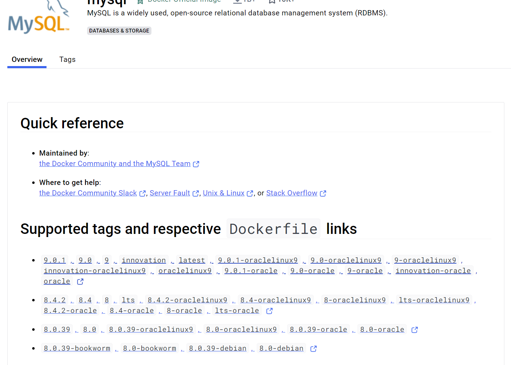

Last change: 2024-08-13 18:49:53
Win11下利用docker安装mysql8#
Reference#
在这篇文章中我们选择windows11作为宿主机
1 新建挂载文件#
在C盘用户目录下新建以下文件夹

挂载
在 Docker 中，挂载（mount）是指将宿主机上的目录或文件与 Docker 容器内的目录或文件进行连接。这种方式可以让容器访问宿主机上的数据，从而实现数据的持久化和共享。
具体来说，Docker 支持两种挂载方式：
绑定挂载（bind mount）：将宿主机上的特定目录或文件直接挂载到容器内。这意味着容器内的文件会直接反映宿主机上的文件，反之亦然。使用绑定挂载时，你需要指定宿主机的路径和容器内的路径。
例如：
docker run -v /宿主机路径:/容器路径 my_image
数据卷（volume）：Docker 管理的存储空间，可以在多个容器之间共享。数据卷存储在宿主机的特定位置，但不直接暴露给用户。使用数据卷可以更好地管理数据，便于备份和迁移。
例如：
docker run -v my_volume:/容器路径 my_image
通过挂载，Docker 容器可以访问宿主机的数据，确保数据在容器重启或删除后仍然存在。
2 拉取mysql#
进入docker hub查看mysql可用版本
 打开cmd，输入以下命令拉取mysql8.4.2
docker pull mysql:8.4.2

{kind=link}
3 生成容器#
运行镜像生成容器，打开cmd运行以下命令
docker run -p 3306:3306 --name mysql -e MYSQL_ROOT_PASSWORD=123456 -d mysql:8.4.2
4 处理mysql配置文件#
{kind=link}
{kind=link}
{kind=link}
5 重新生成容器并挂载文件#
删除旧容器
docker rm -f mysql
重新运行镜像生成容器
docker run -p 3306:3306 --name mysql -v C:\Users\16587\dockerspace\mysql8\conf\my.cnf:/etc/my.cnf -v C:\Users\16587\dockerspace\mysql8\logs:/logs -v C:\Users\16587\dockerspace\mysql8\data:/var/lib/mysql -e MYSQL_ROOT_PASSWORD=123456 -d mysql:8.4.2 --lower-case-table-names=1
-p 3306:3306：将容器的 3306 端口映射到主机的 3306 端口.-v ...\conf\my.conf:/etc/mysql/my.cnf：将主机当前目录下的 conf/my.cnf 挂载到容器的 /etc/my.cnf.-v .../logs:/logs：将主机当前目录下的 logs 目录挂载到容器的 /logs.-v .../data:/var/lib/mysql：将主机当前目录下的data目录挂载到容器的 /var/lib/mysql.-e MYSQL_ROOT_PASSWORD=123456：初始化 root 用户的密码.
6 修改配置文件#
在宿主机win下修改
my.cnf文件[mysql] #设置mysql客户端默认字符集 default-character-set=UTF8MB4 [mysqld] #设置3306端口 port=3306 #允许最大连接数 max_connections=200 #允许连接失败的次数 max_connect_errors=10 #默认使用“mysql_native_password”插件认证 default_authentication_plugin=mysql_native_password #服务端使用的字符集默认为8比特编码的latin1字符集 character-set-server=UTF8MB4 #开启查询缓存 explicit_defaults_for_timestamp=true #创建新表时将使用的默认存储引擎 default-storage-engine=INNODB #等待超时时间秒 wait_timeout=60 #交互式连接超时时间秒 interactive-timeout=600 # 对数据库表大小写不敏感设置，默认设置为小写，比较也全部设置为小写在比较 lower-case-table-names=1

重启容器
docker restart mysql
进入终端MySQL，查看
my.conf是否生效docker exec -it mysql /bin/bash mysql -u root -p123456
输入
SHOW VARIABLES LIKE '%time_zone%';
time-zone显示+08:00，则表示配置生效
如果出现
my.cnf配置不起效的情况，可能是文件的权限问题，可以使用命令docker logs mysql查看.cnf文件是否被忽略解决方法：
修改文件权限
docker exec -it mysql /bin/bash # 查看权限 ls -l /etc/my.cnf # 如果输出结果的第一个字段表示权限。 # 如果权限是 -rwxrwxrwx，则表示该文件的权限是 777，修改权限为 644 chmod 644 /etc/my.cnf
再次进入mysql
mysql -u root -p123456
如果出现以下报错
ERROR 2002 (HY000): Can't connect to local MySQL server through socket '/var/run/mysqld/mysqld.sock' (2)
检查文件
/var/run/mysql/mysqld.sock是否存在。若不存在，则进行手动创建：touch /var/run/mysqld/mysqld.sock更改文件权限，使得MySQL进程可以使用这个文件：
chown mysql /var/run/mysqld/mysqld.sock
重启容器
docker restart mysql